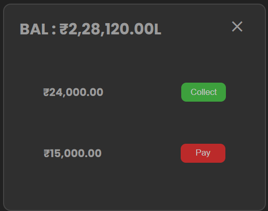
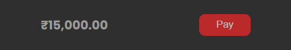
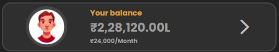
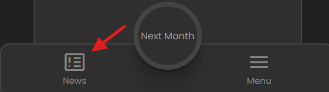
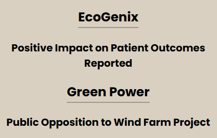
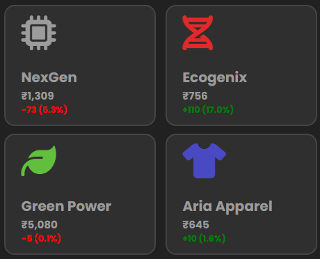
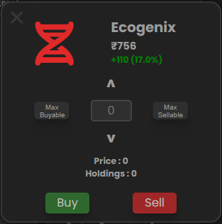
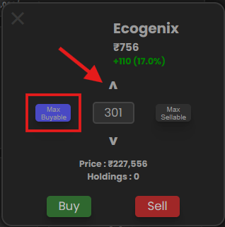
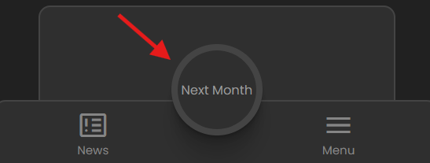
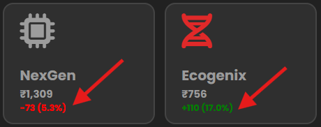

Welcome to the demo version of Rich Race, where you can test your financial skills by managing your salary,
paying expenses, and investing in stocks based on market news. Follow these steps to succeed:
1. Receive Your Salary
At the start of each in-game month, you have to collect a fixed monthly salary. The amount is set and remains the same each month throughout the demo.

This salary is your primary source of income, and you’ll need to carefully manage it to cover your expenses and invest in the stock market.
2. Pay Monthly Expenses
A portion of your salary will be deducted each month to cover living expenses such as rent, utilities, and other basic costs.

The remaining balance after expenses will be your available funds for the month, which you can use to buy stocks or save for future months.

3. Check the News Tab
The News Tab is your key to understanding stock market trends. Every month, new information is posted that can influence the prices of the four available stocks.

Positive news generally signals an increase in stock prices, while negative news can indicate a price drop.

"News Update: Read the latest news to gauge how stock prices might change. Use this information to make informed investment decisions."
Carefully read the news and assess which stocks might perform well in the next month. Use this information to guide your investments.
4. Buy Stocks
With the information from the news, decide which of the four available stocks you want to invest in.

To buy a stock:
Select the stock you want to purchase.

Choose the quantity based on how much money you want to invest. You can click on Max Buyable, it will automatically calculate the quantity you can buy with available balance

Confirm your purchase. The cost of the stocks will be deducted from your available funds.
Once you’ve made your investments, you’re ready to move forward to the next month.
5. Advance to the Next Month
After buying stocks, click the Next Month button to progress the game.

"Next Month: Click the button to move forward. Stock prices will update based on the previous month’s news, affecting your investments."
When the new month begins, stock prices will adjust according to the news from the previous month. This is where your investment decisions will either pay off or backfire, depending on market conditions.
6. Sell or Hold Your Stocks
After stock prices have updated for the new month, you have several options:
Sell : If the stock’s price has gone up, you can sell to make a profit. The higher the stock price, the greater your profit.,
You can simply understand how much points the stock price changed from previous month

Hold : If you think the stock will rise further in future months, you can choose to hold onto it.
Sell based on News: If the news predicts a downturn for a stock, you might want to sell before the price drops, even if it hasn't risen yet.
The decision is yours—manage your investments wisely to maximize your gains.
7. Repeat the Cycle
After you’ve made your decision to sell, hold, or buy more stocks, continue the cycle by advancing to the next month. With each month, you’ll receive your salary, pay expenses, check the news, and decide how to invest.
The goal is to grow your wealth by making smart decisions about when to buy, hold, and sell stocks based on market conditions.